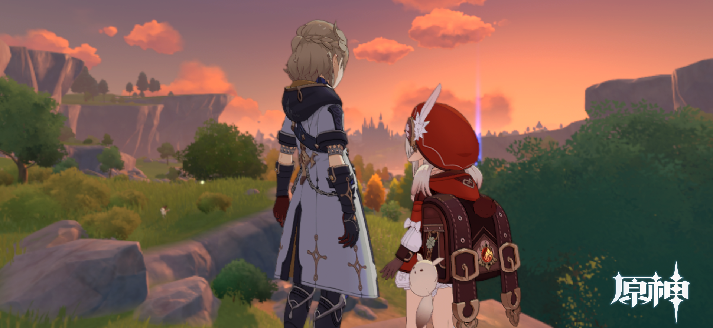
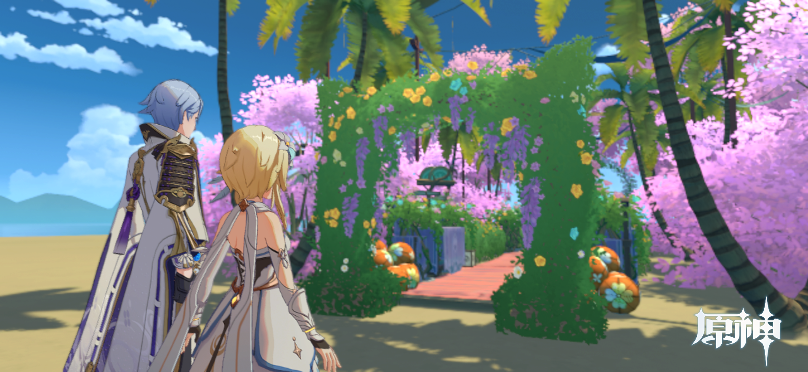

停留的美景述说故事
两位旅行者在永恒之境中探索到了秘境形成的原因，原是魔神大战时期，花神死亡时遗留下的能量造成的。
因秘境里一切都是静止的，发现的几个宝箱因神秘力量封锁都无法打开，什么也无法带走。
两位旅行者渐渐沉浸在了美景当中，带走美好的记忆也很棒呀！
秘境中出来后，正好又遇到了黄昏的美景，远方的彩云相伴着前行，似乎也在讲述着属于它们的故事。
记忆中的向雪山进发
二人相伴在大陆上行走着，当月亮高挂天空时，在皎洁的月光下，墨墨突然发现了远方曾探索过的雪山之钉，
影影绕绕的寒雾更增添了神秘。两人不禁聊起了第一次的组队探险雪山的经历，一路上战胜重重危险，
抵达顶点的艰难、快乐的记忆。落落提出要向更远方前进，一起挑战更多的未知，创造更多的美好回忆。

瀑布、巨树、城池
一路前行，来到了须弥城的外围，远处的瀑布和须弥城依托的参天巨树极为震撼。
神秘的小伙伴
此时正值正午时分，烈日炎炎，在路边寻到了一处凉亭避避暑。
不过此处似乎还有着未知存在，落落看向墨墨（她好像发现了什么），经过墨墨的解释，
原来雨林存在着草神的眷属---兰那罗，兰那罗于暗中帮助旅者解决路上遇到的困难，保护着草神的子民。
经兰那罗说除非它们主动现身，否则只有极幸运的人才能偶然看见它们！
甚至还邀请了我们去它们家里---桓那兰那玩，跟我们介绍更多的兰那罗认识。
蘑菇巨树的美景
告别了兰那罗以后，墨墨和落落继续向前出发，发现远处有着蘑菇一样的巨树，甚是奇怪，但远观也是一道风景线。
对于这陌生又奇妙的雨林景色，二人决定前去探索未知，期望发现更多的东西。
神秘山洞
来到蘑菇树下后，两人见识到了很多奇怪的生物，比如背上长着蘑菇的猪。
落落在追逐蘑菇猪的时候，偶然发现了隐藏在巨大树根旁的山洞，看洞口的样子是人为形成的，
里面说不定会有很多宝藏，便叫上墨墨准备一探究竟。
进入山洞后，一片漆黑，墨墨用锅巴点亮了洞口的火把，没想到里面的火把竟依次燃烧了起来，照亮了通路。
未知的危险
面对此番诡异情形，二人本就为探索而来，哪有后退的道理。
拾阶而上，来到了一处类似祭台的前面，上面除了一个石像外空空荡荡，甚是凄凉。
锅巴似乎察觉到了什么，但又无法言说。二人便谨慎的戒备着向石像走去。
冰莲的昙花一现
来到空荡荡的石像前站定，正在观察石像的时候，突然石像前方出现了一朵冰莲。
冰莲静悄悄的旋转着绽开，待花瓣完全绽开后，“嘭”的一下消失了，散发出点点冰晶，归于虚无。
洞内还是静悄悄的，其他什么危险也没有出现，二人面面相觑。落落提出：既然没有危险，就继续前行吧。
石台
继续沿着石阶往上走，面前出现了两个通道。两人用石头剪刀布决定先去哪边，落落赢了选择了先走右边。
顺着越来越狭窄的通道走，忽然视野开阔了起来，前方的水池中央似乎放着一个石台。
水池的水呈现绿色，为了避免陷入危险，落落用冰的力量冻结了整个水池，
两人来到石台前，发现了一个宝箱，结果打开后竟然空空如也！
墨墨发现了宝箱内顶部上留有一张纸条：哈哈哈，被我骗到了吧，真正的宝藏不在这里哟！
奇怪的光球
虽然对恶作剧感觉无语，但两人还是趁着冰未化开前快速离开了这里，去了左边的通道。
在通道的尽头，发现了一个悬空的光球，散发着阵阵光晕，吸引着人靠近。
接近光球下的石柱时，突然出现了独眼小宝和大宝几位兄弟，随着它们的攻击，光球上方还会掉落石块儿，
落落和墨墨凭借着默契的配合，有惊无险的战胜了敌人。
石柱上有个控制机关，两人检查周围后，发现并无其他东西，眼神交流后，墨墨便按下了机关。
光球随即发出了刺眼的光芒。

神秘的海岛
再次睁眼后，两人发现似乎被传送到了其他的场景中。
面前有个猫猫头形状的、开着五颜六色花瓣的门，远方有着一望无际的海洋，环顾四周，这里似乎是座岛屿。
景色甚是美丽。

夕阳无限好
穿过花门，墨墨和落落迎着夕阳的余晖，走在中间的红毯上，看着远处被夕阳点缀的心形花环，深深的震撼住了。
二人不约而同的停下了脚步，静享此刻的安逸和美景。
你在说，我会听
夕阳退去后，两人走到了爱心花环前，落落鬼使神差的牵住了墨墨的手，轻声回忆着这一路的冒险时光，
面对困难相互鼓励、面对失落相互安慰、打闹嬉戏、相伴前行。
此时情绪此时天
不知不觉中，月亮悄悄的爬上了高空，似乎想躲在云层后，悄咪咪的观察下方的两人。
云层也像是此时的心绪，聚了又散，散了又聚，不断变换。
掌上星河
两人发现，不知为何，如此晴朗的夜空，天上却无一颗星星。
墨墨拉着落落来到了喷泉旁，用神秘的力量向落落展示了一个个星象变换，甚是美丽。
为霞尚满天
随着时间流逝，二人坐在秋千上，似乎唤起了墨墨开心的记忆，脸上不自觉的露出了笑容。
伴随着夕阳余晖再次消失，墨墨和落落突然眼前一花，被送离了这个海岛场景。
年年岁岁花相似
再次睁眼时，似乎又回到了石像前，看着这熟悉的场景，落落不禁面露疑色（是幻境还是梦境？），
身旁的墨墨似乎并没有表现出异样。
在石像旁又检查了一次，并没有什么事情发生。两人这次在里面什么也没有发现。
未知
在里面探索一圈后，墨墨和落落决定离开了，来到入口位置回望，火把照亮的地方似乎还埋藏着什么秘密。
在两人踏出洞口时，身后的火把逐一熄灭了。